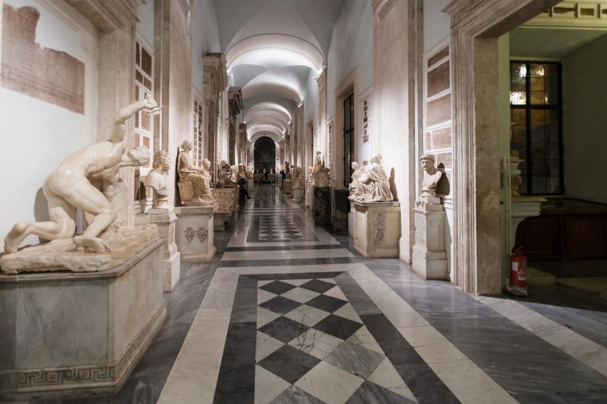
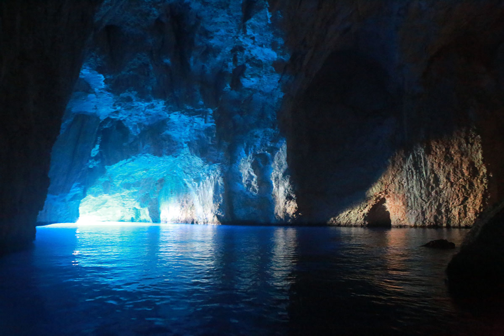

ÜLKELER
- Fransa
- İtalya
- Japonya
|
|
ÜLKELER
|
HAKKIMIZDA | İLETİŞİM | |||
Trevi Çeşmesi (Fontana di Trevi), Türkiye’de bilinen adıyla ise Aşk Çeşmesi, yapımındaki zanaatkârlık ve estetik kurgu ile Roma’nın en ihtişamlı sembollerinden biri. Yılda ortalama 10 milyon turistin uğrak noktası olan tarihi yapının geçmişi neredeyse üç asır öncesine dayanıyor.Fontana di Trevi’nin yapımına 1732 yılında başlandı. Görev, Papa XII. Clement’in isteğiyle dönemin ünlü heykeltıraş ve mimarı Nicola Salvi’ye verildi. Traverten ve mermerlerden oluşan yapının inşası tam 30 yıl sürdü ve yapımında birçok ünlü mimar rol oynadı. Aşk Çeşmesi’nin hikâyesi şöyle bir rivayete dayanır: Savaştan yorgun düşen kral ve askerleri susuzluktan ölmek üzerelerdir. Tam bu sırada karşılarına bir çeşme çıkar ve hayatları kurtulur. İşte o çeşme, klasik ve barok ahenginin en mükemmel eserlerinden Çeşmenin olduğu meydana çıkan üç yol vardır ve Trevi İtalyanca’da üç yol anlamına gelir. Ayrıca yapı, bünyesinde birçok heykel, kabartma ve betimlemeler barındırır. Hepsi farklı bir figürü temsil eder. Çeşmenin ortasında yer alan heykel Posedion’u, yanlarındaki heykeller ise bereket ve sağlık tanrıçasını temsil ederbiri olan Fontana di Trevi’dir.
Yine merkez bölümünde iki Triton arasında Tanrı Neptün heykeli yer alır. Roma Mitolojisi’ne göre Neptün, su ve denizlerin tanrısıdır. İki yanında biri uysal, diğeri agresif iki at ve onları tutan Tritonlar yer alır. Eserin tepe kısmında 4 adet daha heykel vardır. Bu heykeller bereket ve doğa ananın cömertliğini sembolize eder.İçinde birçok hikâye barındıran yapının gelenekselleşmiş bir ritüeli vardır: Çeşmenin önündeki havuza para atmak. Her yıl Aşk Çeşmesi’ne para atmak için milyonlarca turist sıraya girer ve bu ritüelin onları yeniden Roma’ya getireceğine inanır.
La Dolce Vita, When in Rome, To Rome with Love, Eat Pray Love, Ladri Di Biciclette ve Roman Holiday gibi birçok ünlü filme konu olan ve neredeyse üç asıra ilham veren Trevi Çeşmesi varlığını tüm ihtişamıyla sürdürüyor. Bazen aşıkları, bazen de tarihe aşık olanları ağırlıyor. Bu arada ‘’Aşk’’ Çeşmesi’nin Roma’nın tersten okunuşu ‘’amor’’ ile bir ilgisi var mıdır dersiniz?
Capitolino Tepesi, bir zamanlar Antik Roma’nın dinsel merkeziydi, bugün burada muhteşem bir müze bulunmaktadır. Yumuşak bir eğimle çıkan Cordonata, sizi tepenin üzerine çıkarır ve bugün de Michelangelo’nun 16.yüzyılda tasarladığı gibi duran binaların cephelerini gözler önüne serer. Yukarıda, atının üzerindeki İmparator Marcus Aurelius, herkese barış dilemek istercesine elini uzatmıştır. Yıldız biçimli piazza’nın kenarlarında, Roma’nın en güzel hazinelerini barındıran ikiz palazzo’lar dikkat çeker. Aşağıda ayrıntılarını göreceğiniz Palazzo Nuovo’nun koleksiyonları ve Palazzo dei Conservatori, 1471 yılında Papa IV. Sixtus’un armağan ettiği bronzlarla görkemli bir biçimde açılmıştı.
İmparatorlar Salonunda İmparatorluk döneminin ünlü hükümdarlarının portreleri sergilenir. Bunların arasında, İ.S. 3.yüzyıldan Caracalla’nın büstü de vardır.Ölen KöleKoleksiyonun en güzel parçası olan heykel, büyük bir acıyı yansıtır. Eserin, İ.Ö. 3.yüzyıl tarihli Yunan bronzunun İ.S. 1.yüzyıl Roma kopyası olduğu düşünülmektedir.Capitolino VenüsüBu ışıl ışıl tanrıça Venüs heykeli tek başına bir odada durmaktadır. Heykel, Praksiteles’in İ.Ö. 4.yüzyıl tarihli Aphrodite’sinin, 1.yüzyıldan kalma kopyasıdır; banyo yapan tanrıça çıkagelen birinden ürkmüş gibi edep yerlerini örterken betimlenmiştir.
Kumrular MozaiğiOrijinalinde, Hadrianus Villası’nın zemin dekorasyonunun parçası olan bu zarif mozaik, küçük mermer parçalar ve camlarla (tesserae), doku ve hacim duygusu verecek biçimde oluşturulmuştur.Marforio Saçı sakalına karışmış bu dev, aslında bir nehir tanrısıdır ve buraya muhtemelen Augustus Forumu’ndan getirilmiştir. Bir Rönesans heykeltıraşı, bu avlu çeşmesine konacağına bilmiş gibi, onu denizler tanrısının özellikleriyle donatarak buraya bırakmış olmalı.
Kolezyum ya da Flavianus Amfitiyatrosu, İtalya'nın başkenti Roma'da bulunan oval bir amfitiyatrodur.Usta bir komutan olan Vespasianus tarafından MS 72 yılında yapımına başlanıp MS 80 yılında Titus döneminde tamamlandı. Daha sonraki değişiklikler Domitian hükümdarlığı zamanında yapıldı.Kolezyum, traverten kireç taşı, tüf (volkanik kaya) ve tuğla kaplı betondan yapılmıştır. Kolezyum, tarihinin çeşitli noktalarında yaklaşık 50.000 ila 80.000 seyirciyi ağırlayabilmiştir.

İmparatorlar burada Roma halkını eğlendirmek ve biraz da kendi eğlenceleri için
gladyatör dövüşleri gibi çok acımasız
eğlenceler düzenlerlerdi. Bunlardan başka pek çok halk gösterileri, deniz savaşları, hayvan
avcılığı, infazlar, meşhur
savaşların yeniden canlandırılması, klâsik mitolojiye dayanan dramalar da canlandırılırdı.
Kolezyum daha sonra barınma
yeri, iş dükkânları, dinî kışlalar, istiham, taş ocağı, Hristiyan türbesi olarak çeşitli
amaçlarla kullanıldı. Asıl adı
Arena iken sonradan girişteki heykelin adını aldı.Günümüzde depremden dolayı harap vaziyette
olmasına ve taşlarının çalınmasına
rağmen Kolezyum, Roma İmparatorluğu'nun uzun zamandan beri ikonik sembolü olarak görülür.
Bugün modern Roma'nın en çok turist
çeken yerlerinden biridir. 7 Temmuz 2007 tarihinde, Dünya'nın Yeni Yedi Harikası'ndan biri
seçildi.Ayrıca Roma Katolik Kilisesi
ile yakın bağlantıya sahiptir. Paskalya öncesi Cuma günü Papa amfitiyatroda fener alayı
düzenler. Kolezyum'un resmi İtalya'da
basılan 5 avro sent bozuk parasının arkasına basılmıştır.
Pisa Kulesi, İtalya'nın kuzeyindeki Pisa şehrinde Piazza dei Miracoli'de (İtalyanca Mucizeler Meydanı) yer alan ve 1063-1090 yıllarında yapılan şehir katedralinin çan kulesi, ana yapıdan ayrı olarak 1173-1272 yılları arasında yapıldı. İnşası 99 yıl sürdüğü için mimarı konusunda net bir bilgi bulunmamakla beraber Mimar Bonnano Pisano ve Diotisalvi tarafından yapıldığı tahmin edilmektedir.1987 yılı itibarıyla UNESCO Dünya Mirası Listesi'ne girmiştir. Kule üst üste bindirilmiş yuvarlak 6 sütun dizisinden meydana gelmiştir. 55,86 metre yüksekliktedir. Üzerine 294 basamaklı bir merdivenle çıkılır. En üstteki çanların bulunduğu 8. kat silindir biçimindedir. 2 adet sarmal merdivene sahiptir.Pisa Kulesi bitirildiği tarihten itibaren güneye doğru eğilmeye başlamıştır. Bunun sebebi temelin oturduğu zeminin çökme (oturma) yapmasıdır. Günümüzde, kulenin tepesinden güney yönünde aşağı sarkıtılan bir şakul 4,3 metre açığa inmektedir. Ancak yapının ağırlık merkezinin izdüşümü kendi temel dairesinin içinde kaldığı için kule devrilmemektedir. Kule her yıl milimetrenin onda yedisi kadar (100 yılda 7 cm) eğilmektedir. Kulenin şu andaki eğimi 5,5° kadardır.
Restoran işletmecisi Ado Campeol'un (1928–2021) ölüm ilanlarında, tiramisunun 24 Aralık 1969'da Treviso'daki restoranı Le Beccherie'de eşi Alba di Pillo (1929–2021) ve pasta şefi Roberto Linguanotto (1943–2024) tarafından icat edildiği bildirilmiştir. Yemek, 1972'de menüsüne eklendi.Temmuz 2024'teki ölümünden sonra, Le Beccherie restoranı Linguanotto'yu tiramisunun yaratıcısı olarak gösterdi.Tiramisunun afrodizyak etkileri olduğu ve Accademia Del Tiramisù'nin açıkladığı gibi, 19. yüzyılda Treviso genelevinin bir hanımı tarafından "eşlerine döndüklerinde evlilik görevleriyle ilgili yaşadıkları sorunları çözmek" amacıyla uydurulduğu iddia edilmektedir .Kule, Pisa'nın gücünün ve zenginliğinin bir sembolü olarak Cenova ve Venedik'e rakip olarak yapılmıştır.Galileo'nun, bütün cisimlerin aynı hızla ve aynı fizik kanununa uyarak düştüklerini farklı ağırlıklardaki iki top güllesini bu kuleden aşağı bırakarak gözlemlediği iddia edilmiştir. Bilginin kaynağı Galileo'nun bir öğrencisi olmasına rağmen bu iddia geniş çevrelerce bir efsane olarak kabul edilir.Kuleye ilk olarak 1910-1920 yılları arasında temel altına çimento enjeksiyonu yapılarak onarım görmüş. Sonrasında, 1990-2001 yılları arasında tekrar onarıma girip kapalı kalmıştır. Bu onarım da temelin kuzey tarafına 599 ton ağırlık konularak eğilmenin durdurulması amaçlanmıştır. Bu onarımın toplam maliyeti 20 milyon sterlin olmuştur.2008 yılında yapıya yerleştirilen cihazlar sayesinde kulenin tamamen hareket etmeyi bıraktığını göstermektedir.

Capri Mavi Mağarası, antik çağlara dayanan zengin bir tarihe sahiptir. Mağaranın Romalılar
tarafından
keşfedildiğine ve İmparator Tiberius için özel bir yüzme yeri olarak kullanıldığına
inanılmaktadır.
Mağara, yüzyıllar boyunca şairlerin, sanatçıların ve gezginlerin hayal gücünü ele
geçirmiştir.
Ancak Mavi Mağara'nın yaygın bir üne kavuşması 19. yüzyıla kadar gerçekleşmedi. 1826'da
Alman ressam
August Kopisch ve arkadaşı sanatçı Ernst Fries mağarayı ziyaret etti ve güzelliğinden
büyülendi.
Mağara hakkındaki anlatıları ve resimleri Avrupa'nın her yerine yayıldı, sürekli bir
ziyaretçi akışı
çekti ve görülmesi gereken bir yer olarak statüsünü sağlamlaştırdı.
Mavi Mağara, yaklaşık 60 metre uzunluğunda ve 25 metre genişliğinde doğal bir deniz
mağarasıdır.
Mağaranın girişi dar bir açıklıktır, sadece iki metre genişliğinde ve yaklaşık bir metre
yüksekliğindedir.
Bu küçük giriş, ziyaretçilerin portaldan geçmek için küçük kürekli teknelere binmesi ve
uzanması gerektiğinden
mağaranın gizemine katkıda bulunur.Mağaranın içinde sihir gerçekten başlıyor. Mağara
duvarlarından ve suyun yüzeyinden
yansıyan güneş ışığı, mağarayı aydınlatan uhrevi bir masmavi ışık yaratıyor. Çarpıcı mavi
ton ve nazik dalgaların ve antik
Napoli şarkılarının rahatlatıcı yankısı, ziyaretçilere sanki göklerde asılı kalmış gibi
hissettiriyor.